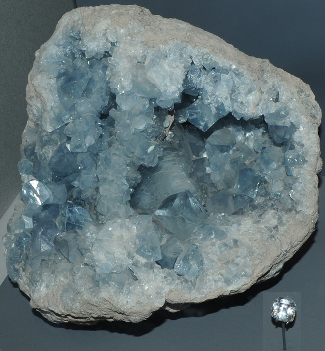
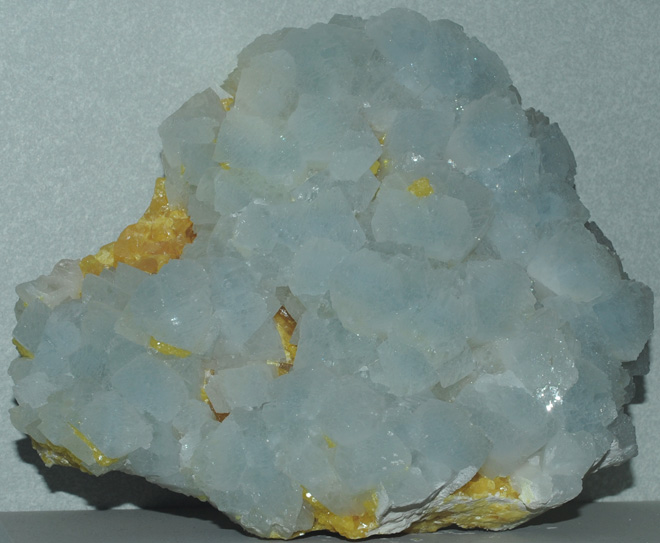
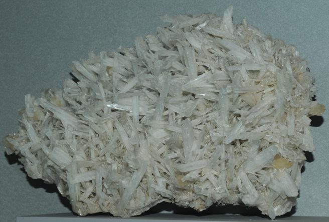
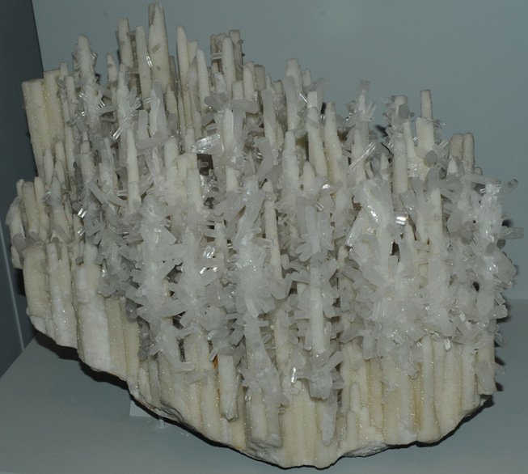
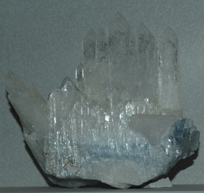
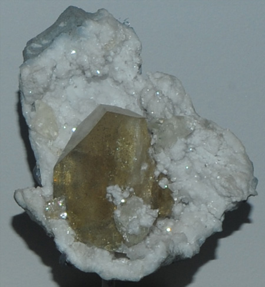
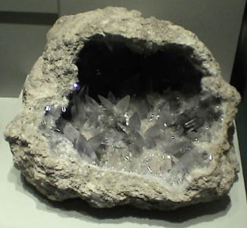

Celestite
Also called Celestine
|  | SrSO4These samples of celestite are on display at the Smithsonian Museum of Natural History. Celestite is strontium sulfate, SrSO4. The size of the sample is about 10-12 cm high and it is from Madagascar. The gem is 16.8 carats and is shown at the same scale.
|
This sample is described as celestite with sulfur. It is about 14 cm across and is from Agrigento Sicillia, Italy. | 
|
|  | This sample of celestite is is about 30 cm across and is from Clay Center, Ohio. It is described as celestite with calcite.
|
This sample is described as celestite with aragonite. It is about 30 cm across and is from Agrigento Sicillia, Italy. | 
| The sample of celestite at right is about 10 cm wide and is from Mitchell, Indiana.
This celestite sample is about 15 cm across and is from Detroit, Michigan. | 
|
|  | This sample of celestite is is about 12x11 cm and is from Sakoany mine, Majunga, Madagascar.
|
Mindat: Celestite
|
Index |